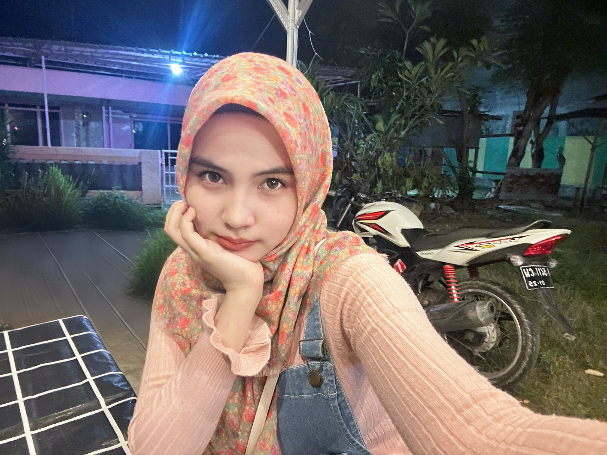

Mahasiswa Teknik Informatika
NIM: 2024520056 💖 Suka Boneka 🌸 Soft Pink Theme| Nama | Nayla Firdauziyah Rahman |
| NIM | 2024520056 |
| Jurusan | Teknik Informatika |
| Hobi | Boneka |
Halo, saya Nayla Firdauziyah Rahman, mahasiswa Teknik Informatika yang sedang belajar tentang pengembangan web, desain tampilan website, dan teknologi digital. Saya suka hal-hal yang lucu dan estetik, terutama tema boneka dan warna-warna lembut seperti pink.
Saya sangat menyukai boneka karena lucu, menggemaskan, dan memberi kesan nyaman.
Saya ingin terus belajar dan mengembangkan kemampuan teknologi agar bisa menciptakan karya digital yang bermanfaat, menarik, dan membanggakan.